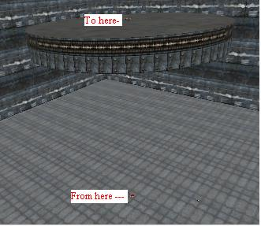

Spawndeath
Spawndeath is an error condition where the mapper tests a map in progress only to find their Player character continually die, as if automatically suicided, respawn and die again.
By in large, this is caused by newly added BSP (either Addition or Subtraction) to the map which has not been rebuilt since. It is recommended that mappers BuildAll or BuildGeometry after each BSP change and before Playtesting.
Related Topics
Discussion
ZxAnPhOrIaN: You only have to build the bsp, not lights and paths. And yes, i do press the build geometry every time i playtest
Trystan: I think they should make it an option in the next patch of UEd to "Rebuild All" before playtesting. Little checkbox does a map good. 
ZxAnPhOrIaN: How many patches of UED are there anyway?
Mychaeel: A warning message would be better when things have been added or changed that require a rebuild. Many changes don't.
Obi-WON:Oops sorry! I (the original author) am just a n00b. Think you can help me with a problem? I'm trying to place a player start above a cylinder but when I start the game, I die as soon as I touch the cylinder. Map Error Check says "PlayerStart4 Navigation point is not on valid base, or to close to steep slope". The cylinder is at least 1000 UU in radius, solid and not hollow. I would very much appreciate some help here, thx!
ZxAnPhOrIaN: There might be a bsp problem, how many sides is your cylinder?
Obi-WON: Thx for answering me; it has 64 sides!
Besides...I placed the starting point on ground instead and tried to teleport to the cylinder. Now I'm able to start, but when I teleport up to the cylinder...same result! Does it matter that the cylinder is high above ground?
ZxAnPhOrIaN: Could you please post a pic? Your description is unclear to me.
Obi-WON: 
ZxAnPhOrIaN: Hmmm... Could you please post the map in ucript boxes here? I want to fool around with it. Spawndeath/teleporterproblem?
ZxAnPhOrIaN: Also, check the surface properties, you may accedentally made them zone portals.
Obi-WON: Yes I would if I knew how to do that...unfortunately I am just a n00b. Please tell me how to view the script in the editor! I checked and its not zone portals!
DemonThing: What you can do is, in UnrealEd, go to File > Export..., and save the map as a .t3d file. Open that file in Notepad (or some other text editor), and copy and paste the contents like this:
// Note: this is an example, and is from CTF-Face. Begin Map Begin Actor Class=LevelInfo Name=LevelInfo0 TimeSeconds=40.133190 Title="Facing Worlds" Author="Cedric 'Inoxx' Fiorentino" IdealPlayerCount="4-10" RecommendedEnemies=2 RecommendedTeammates=3 Summary=LevelSummary'MyLevel.LevelSummary' bHighDetailMode=False Song=Music'Foregone.Foregone' PlayerDoppler=1.000000 // large sections removed... Location=(X=5913.093262,Y=-18.800896,Z=-447.899078) OldLocation=(X=5913.093262,Y=-18.800896,Z=-447.899078) Name=InventorySpot167 End Actor End Map
Also, 64 sides on a cylinder is way too much, in my opinion. You should never need anything above 24. That shouldn't be the cause of your problem, though. Is it possible that your teleporter is partially inside the cylinder? That can make for problems, and that's what I think I see from looking closely at the image. If you right-click on a front, side, or 3D viewport, then in the popup menu go to Actors > Radii View, then you should see a collision cylinder around any selected objects. With that, make sure the bottom of your cylinder is on or a couple of units above the surface. Go to Actors > Full Actor View to go back to a normal mode.
Refactor Me – ?